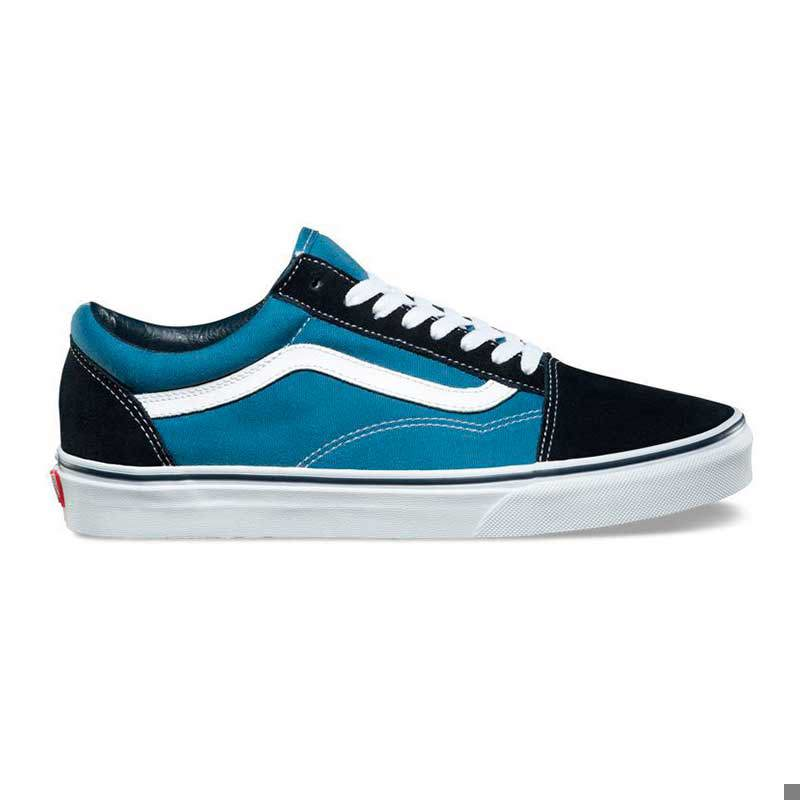

Zapatillas Vans U OLD SKOOL

$ 159.900 Precio sin impuestos nacionales: $ 132148
3 cuotas SIN INTERÉS de $53.300 TEA: 0%
Zapatilla VANS original Old Skool color azul celeste, de corte bajo y perfil urbano. Capellada de lona con puntera reforzada en suede que aporta mayor durabilidad, cuello acolchado para sujeción y confort, y Sidestripe™ lateral en color blanco. Incorpora suela de goma antideslizante con patrón waffle que asegura tracción y resistencia en el uso diario.
Zapatillas Vans M Skate 2 Wayvee

$ 210.000 Precio sin impuestos nacionales: $ 173553
6 cuotas SIN INTERÉS de $35.000 TEA: 0%
Zapatilla VANS original M Skate Wayvee 2.0 color verde, desarrollada para skate con foco en control y durabilidad. Capellada de malla transpirable con panel guarda barro reforzado y protección de cordones en zonas clave. Incorpora construcción Wafflecup™ que equilibra soporte y flexibilidad, plantilla PopCush™ para amortiguación y reducción de impacto, refuerzos internos DURACAP™ y suela de goma antideslizante SickStick™ que mejora el agarre y la sensibilidad sobre la tabla.
Zapatillas Vans U Upland

$ 219.000 Precio sin impuestos nacionales: $ 180991
6 cuotas SIN INTERÉS de $36.500 TEA: 0%
UPLAND X PAULO LONDRA. Zapatilla VANS original U Upland color rojo. Silueta low-top de inspiración noventera con forma mejorada que ofrece un ajuste cómodo y firme para el uso diario. Capellada confeccionada en cuero combinada con material sintético que aporta resistencia y estructura. Cordones anchos y logotipo Heritage “Flying V” como detalles distintivos del modelo. Construcción robusta con suela cosida que envuelve todo el calzado y base de goma antideslizante. Cuello hinchado y lengüeta acolchada que brindan mayor soporte y confort en cada paso.